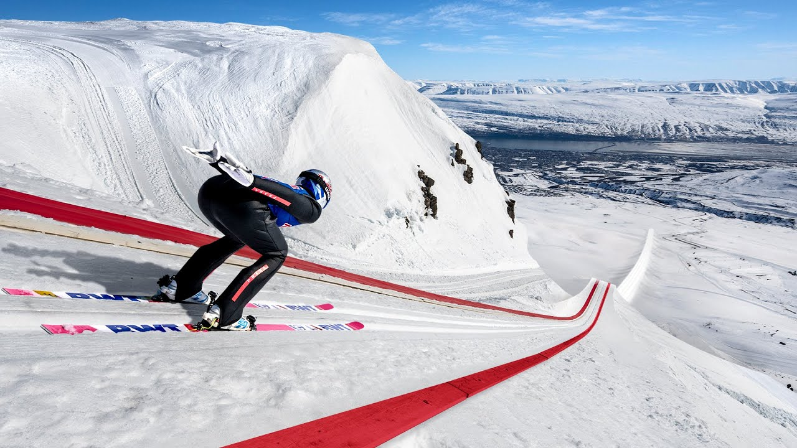

【史上最长滑雪跳台（新纪录）】
Summary: A team builds the world's largest ski jump to break the record, facing challenges like construction, weather, and perfecting Ryoyu's jump, ultimately achieving a new world record of 291 meters.
摘要： 团队建造了世界上最大的滑雪跳台以打破纪录，面临建造、天气和Ryoyu完美起跳等挑战，最终以291米创造了新的世界纪录。

⏱️ Estimated Reading Time: 7 min
📚 高考3500生词 📚 雅思生词 📚 托福生词 📚 GRE生词 📚 UP主自用生词
[DRAMATIC MUSIC PLAYING] JANNE: Here we have the biggest ski jump in the world.
[紧张的音乐播放] JANNE: 这是世界上最大的滑雪跳台。
Oh, me? Oh, yeah. I think I'm more nervous than you are.
哦，我吗？是啊，我觉得我比你更紧张。
JANNE: There are so many challenges to smash this world record.
JANNE: 打破这个世界纪录面临许多挑战。
But the first challenge is, that there is no ski jump big enough in the world, so we need to build our own.
但第一个挑战是，世界上没有足够大的跳台，所以我们需要自己建造。
We needed the real expert to build it.
我们需要真正的专家来建造它。
BERNIE: We first had to figure out exactly what we needed to make this jump work.
BERNIE: 我们首先必须弄清楚需要什么才能使这次跳跃成功。
We have 34 degrees and 250m.
我们有34度的坡度和250米的长度。
We had to find the right slope, angle and length, the conditions, air pressure.
我们必须找到合适的坡度、角度和长度，以及条件和气压。
So, after all the calculations and modeling, we searched all over the world for the perfect hill to build this jump.
因此，经过所有计算和建模后，我们在全球寻找建造这个跳台的完美山坡。
This angle looks good for me. 20 meters.
这个角度对我来说不错。20米。
BERNIE: We have to move slow as much as possible, day and night, 24 hours.
BERNIE: 我们必须尽可能缓慢地推进，日夜不停，24小时。
The weather is quite rough.
天气相当恶劣。
This is not what we need.
这不是我们需要的。
You know, of course, I'm worried about that.
你知道，我当然担心这个。
The other day we had a nice sunshine, almost zero wind.
前几天天气晴朗，几乎没有风。
And I would like to see one of those days in the next week.
我希望下周能有这样的天气。
I've been working here for over half a year now.
我已经在这里工作了半年多。
BERNIE: We moved more than 120,000 cubic meters of snow, preparing the run to be just like the standard ski jump, only much bigger, and out here, right up the mountain.
BERNIE: 我们移动了超过12万立方米的雪，准备让这条跑道像标准跳台一样，只是更大，而且直接延伸到山上。
-Happy? -Yeah. Then I'm happy.
-满意吗？-是的。那我就满意了。
BERNIE: We have calculated the speed needed. 105.
BERNIE: 我们计算了所需的速度。105。
BERNIE: But the only person who can tell us if it's really right is Ryoyu.
BERNIE: 但唯一能告诉我们是否正确的人是Ryoyu。
JANNE: It's a longest ski jump ever. So huge, so big.
JANNE: 这是有史以来最长的滑雪跳台。如此巨大，如此庞大。
Just coming down is an achievement for sure.
光是滑下来就已经是一项成就了。
It's been Ryoyu's dream for a long time.
这是Ryoyu长久以来的梦想。
This is his day.
今天就是他的日子。
BERNIE: So, here we have the biggest ski jump in the world.
BERNIE: 所以，这是世界上最大的滑雪跳台。
Ski jumping world record is 253.5m.
滑雪跳台的世界纪录是253.5米。
Let's see if Ryoyu can smash that today.
让我们看看Ryoyu今天能否打破它。
JANNE: Starting from the gate, because this is the first hill size like this.
JANNE: 从起点开始，因为这是第一个这种规模的跳台。
We don't really know where we should set up the gate.
我们不太清楚应该在哪里设置起点。
Ryoyu will come to the table with a speed around 105 to 107km/h.
Ryoyu将以大约105到107公里/小时的速度到达起跳点。
He will take off, launching himself and flying through the air around 9 to 10 seconds.
他将起跳，腾空并在空中飞行大约9到10秒。
Actually the wind is the only thing that can destroy this.
实际上，风是唯一可能破坏这一切的因素。
Because the speed is so fast, and he's staying in the air so long, the weather and the wind conditions are extremely important.
因为速度如此之快，而且他在空中停留时间很长，天气和风力条件极其重要。
Still too much wind per Janne.
根据Janne的说法，风还是太大。
I'll be standing there and waving down with the flag when it's safe to go.
我会站在那里，当安全时用旗子示意。
With the wind as current now, we should not jump.
以现在的风力，我们不应该跳。
Out, out, out. Take him off the bar, off the bar.
取消，取消，取消。让他离开起跳点。
Too much wind.
风太大了。
I will not let him down when it's, you know, if there is anything wrong with the conditions.
我不会让他失望，如果条件有任何问题的话。
That's my job. That's my responsibility.
这是我的工作。这是我的责任。
-This breeze will like suck him down. -Yeah.
-这阵风可能会把他吸下去。-是的。
Also more longer he will wait, more stress it is.
而且他等待的时间越长，压力就越大。
Yes. Okay. It's getting better. It's getting better.
是的。好的。情况在好转。情况在好转。
JANNE: Yeah. Let him jump. You can send him. Okay, go up.
JANNE: 是的。让他跳吧。你可以让他上了。好的，上去。
MAN 2: Ryoyu going on the gate. Ryoyu going on the gate. Now it's really good.
MAN 2: Ryoyu正在前往起点。Ryoyu正在前往起点。现在情况很好。
MAN 2: Looks like it's getting better now. I think we should be ready...
MAN 2: 看起来现在情况在好转。我想我们应该准备好了...
JANNE: Okay. Get ready.
JANNE: 好的。准备好。
MAN 1: Okay. Get ready.
MAN 1: 好的。准备好。
JANNE: Not totally, but almost calmly.
JANNE: 不是完全平静，但几乎冷静。
So now this supposed to be much better chances to fly.
所以现在应该是更好的飞行机会。
JANNE: Ryoyu is ready? Ready. Three. Two. One. Go! Go! Nice start.
JANNE: Ryoyu准备好了吗？准备好了。三。二。一。出发！出发！起跳不错。
MAN 1: Calculated distance 175.
MAN 1: 计算距离175。
MAN 3: Still possible more? Still possible more. Yes.
MAN 3: 还能更远吗？还能更远。是的。
JANNE: Jump was clean and safe and no problems.
JANNE: 跳跃干净、安全，没有问题。
But then being honest, it was not so good jump.
但说实话，这次跳跃不是很好。
Chasing and hunting the record.
追逐和猎取纪录。
Flag up. Ryoyu go to gate.
举旗。Ryoyu前往起点。
MAN 1: Go! Two, one, take-off. Ryoyu in the air.
MAN 1: 出发！二，一，起跳。Ryoyu在空中。
He's a little bit late with the timing here.
他在这里的时机有点晚。
He cannot find the ideal rhythm.
他找不到理想的节奏。
-Once again.
-再来一次。
MAN 1: That will be great.
MAN 1: 那会很棒。
MAN 1: Speed 103km/h, in the air.
MAN 1: 速度103公里/小时，在空中。
JANNE: He's losing the speed here.
JANNE: 他在这里失去了速度。
-He is supposed to be more...
-他应该更...
BERNIE: Yeah.
BERNIE: 是的。
MAN 1: Three. Two. One. Take-off.
MAN 1: 三。二。一。起跳。
RYOYU: One more?
RYOYU: 再来一次？
-Yes. Okay. This is different.
-是的。好的。这次不一样。
-This is different.
-这次不一样。
-Yes, exactly.
-是的，没错。
JANNE: He can prepare. He can fly. Fantastic.
JANNE: 他可以准备。他可以飞。太棒了。
Conditions are looking really good.
条件看起来非常好。
[AIR WHOOSHING] [CROWD CHEERING]
[空气呼啸声] [人群欢呼]
MAN 2: Ryoyu landed safely. Yes!
MAN 2: Ryoyu安全着陆。太好了！
MAN 2: Distance of the jump 291 meters. New world record.
MAN 2: 跳跃距离291米。新的世界纪录。